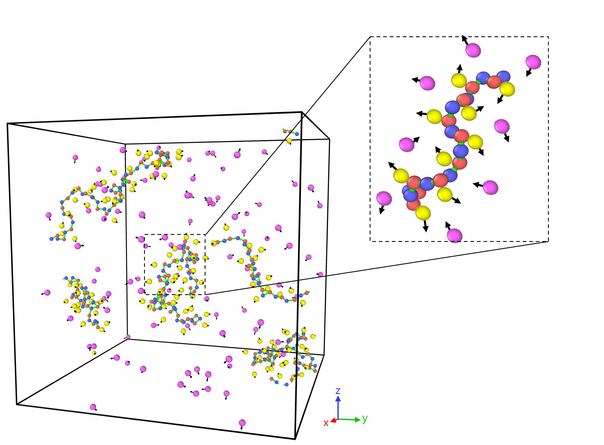

Polymer dynamics
Polymerized Ionic Liquids: Viscosity, Chain Dynamics, and Ion Pairing
The question
When you polymerize an ionic liquid by tethering its cations into chains, you get a solid-like, single-ion-conducting material that is attractive for safer batteries and flexible electronics. These materials are called polymerized ionic liquids. But polymerization also raises viscosity dramatically and couples ion motion to polymer dynamics in ways that small-molecule intuition does not predict. How do cation size and dipole mobility control viscosity, chain reorientation dynamics, and ion-pairing in polymerized ionic liquids? How does dipole mobility modulate ion-polymer coupling?
What we did
We extended the Stockmayer fluid model to polymerized ionic liquids (polyILs), using polyEtVIm-TFSI, in which the cations are rigidly attached to the polymer backbone and the anions are free. We varied the cation sizes and dipole mobilities (restricted dipoles in which the orientation of cation dipoles are sterically limited by the polymer backbone vs. semi-restricted dipoles in which the cation dipoles have additional rotational degree of freedom). We computed viscosity, ion-pair lifetimes, and chain orientational relaxation, as well as decompose the viscosity into contributions associated with different relaxation timescales.

What we found
The manuscript for this research is currently in preparation for submission. Results cannot be shared at this moment.